לפני ואחרי
התמונות מספרות את השינוי החיצוני, אבל מאחורי כל אחת מהן יש סיפור שלם.
התמדה, עבודה קשה, הרגלים חדשים, ביטחון עצמי והרבה ניצחונות קטנים בדרך.
בלי דיאטות קיצוניות ובלי פתרונות קסם. רק תזונה מותאמת אישית, אימוני כוח ותהליך שנבנה סביב החיים והמטרות של כל אחת.

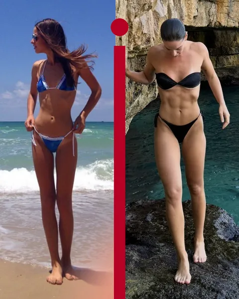


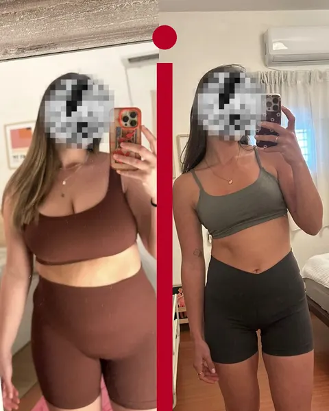


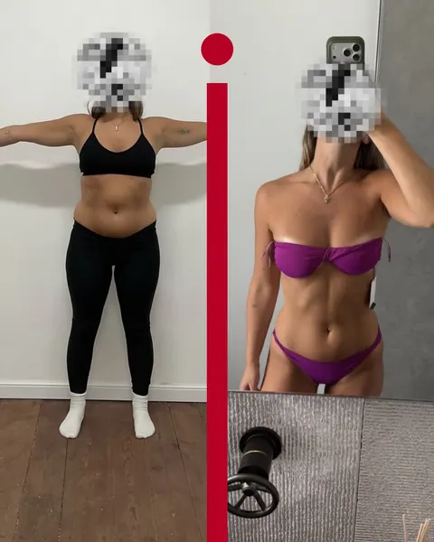

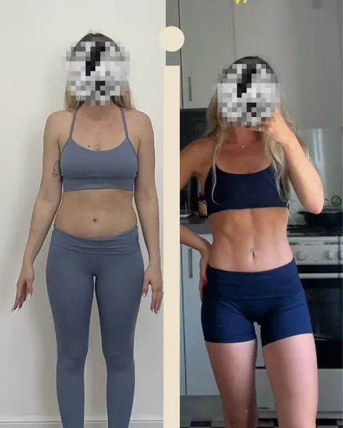

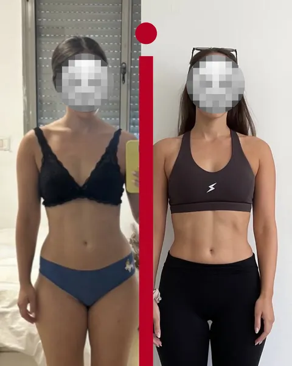

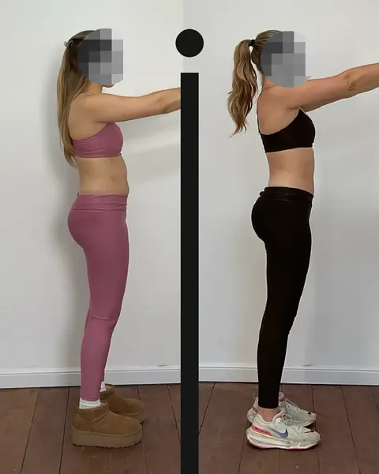

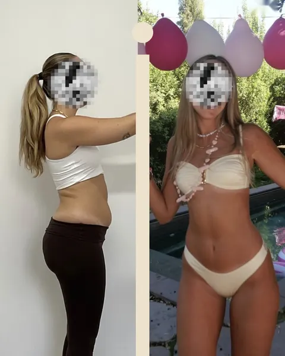


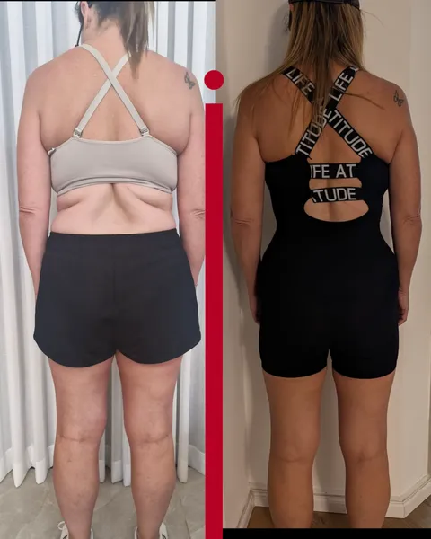

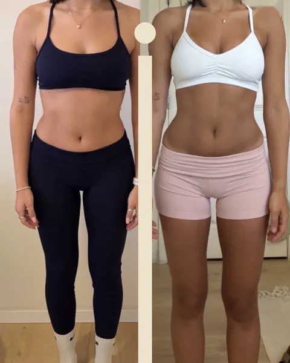


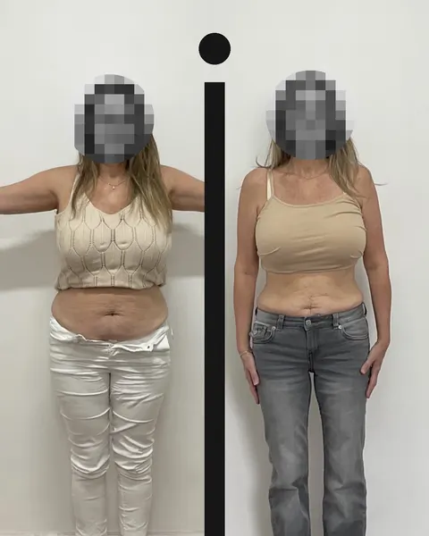

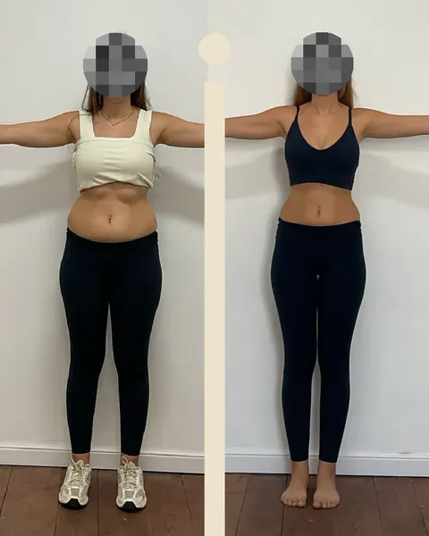

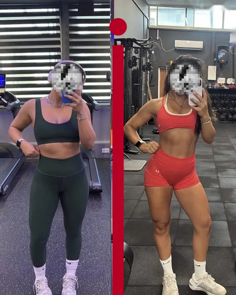

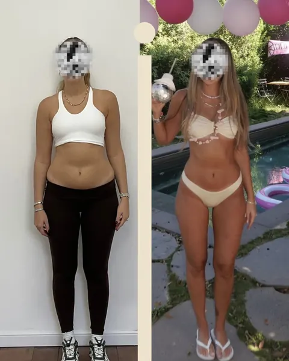

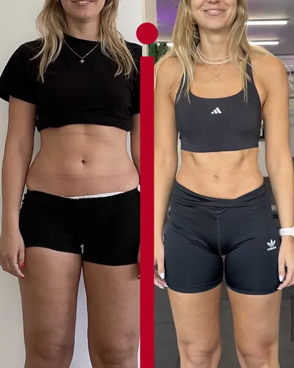


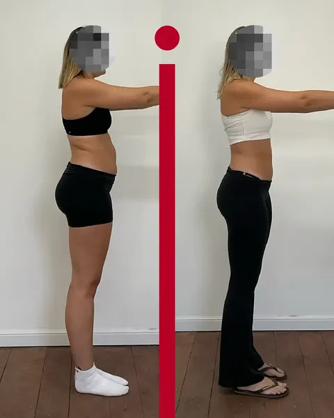

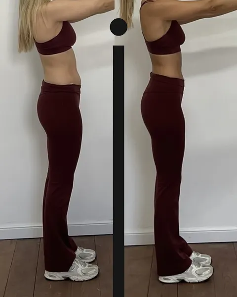

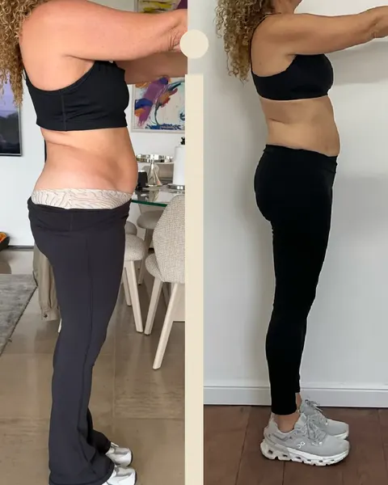

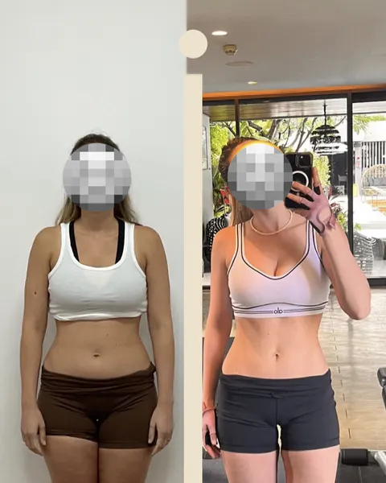


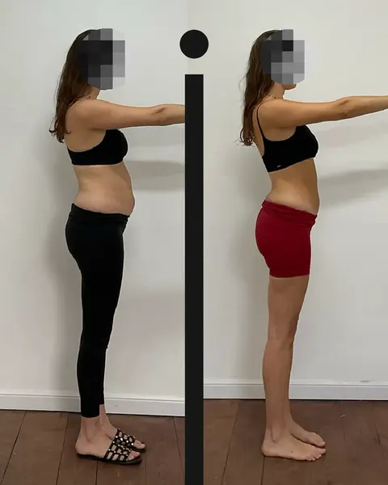

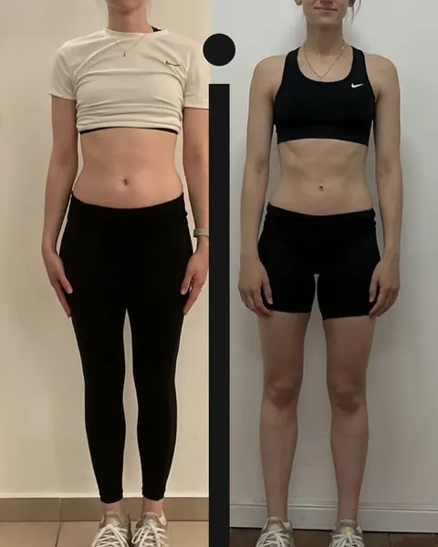

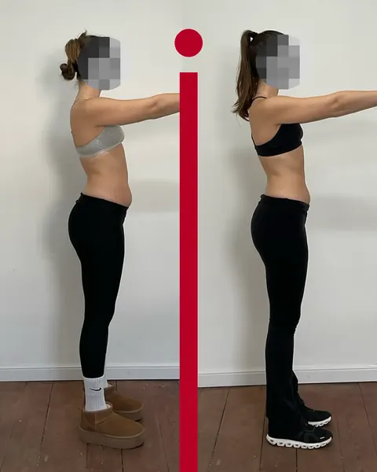

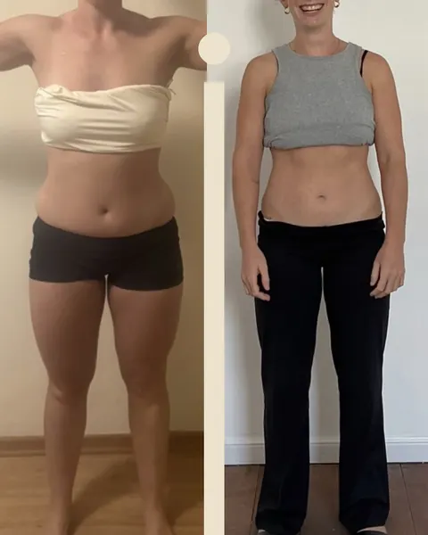

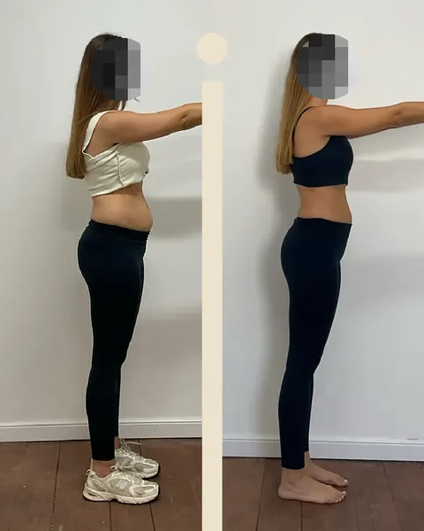

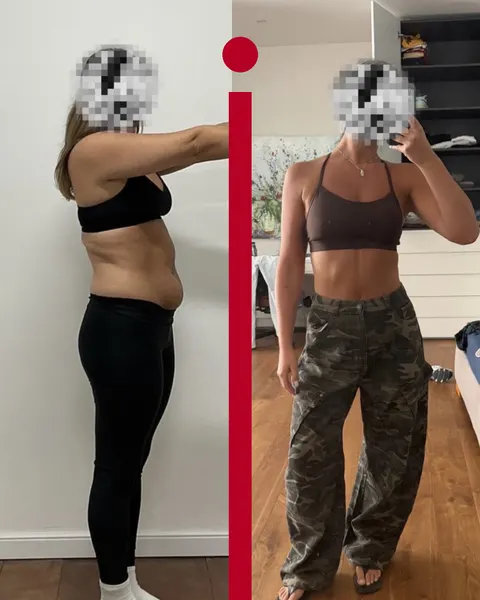